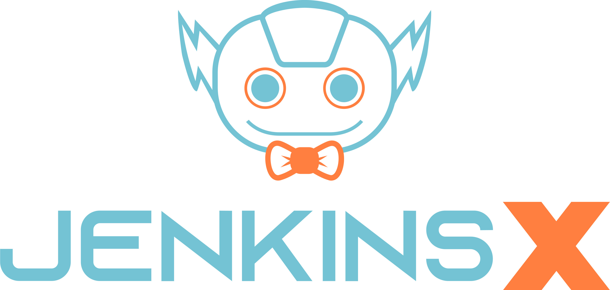
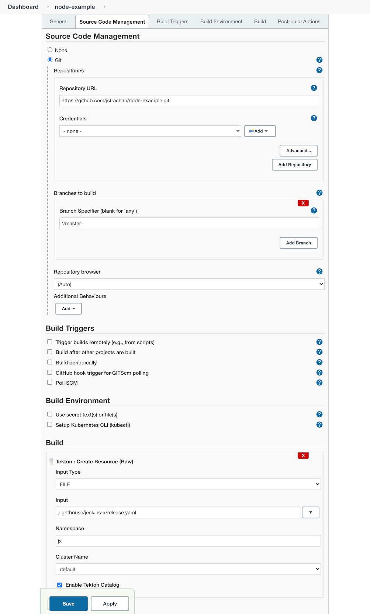

在 Jenkins 上轻松重用 Tekton 和 Jenkins X
什么是 Tekton？
Tekton 是一款强大且灵活的开源框架，它被用来创建 CI/CD 系统，允许开发者们在云提供商本地系统上构建、测试以及部署。
为什么使用 Tekton？
Tekton 流水线有诸多好处:
它们是云原生的并且专为 kubernetes 设计。
每个 Tekton
Pipeline可以完全声明性也可完全自描述；它本身不依赖于任何外部的 Jenkins 控制器、插件或插件/控制器配置。每个
Pipeline Task运行在一个独立的 Pod 内，它完全独立于其他 pods 以及流水线并完全由 Kubernetes 调度从而最大限度的提升弹性以及优化资源使用。一个糟糕的流水线并不会影响另外一个， kubernetes 会统一调度它们。每个步骤可以是运行在任何容器镜像的任何命令，不管你需要什么样的密钥、挂载存储、环境变量和资源限制
不需要绑定一个 JVM 或者 Jenkins Remoting 容器到 pod 内因此可以帮你保持资源以及降低成本。
为什么将 Jenkins 与 Tekton 使用到一起去呢？
Jenkins 是目前最流行的开源的自动化服务器。许许多多的开发者每天使用它用来完成一些工作。Jenkins 现在也可以使用于自动化 Tekton 流水线，这意味着可以帮助越来越多的团队为他们的 CI 和 CD 数字化转型到云原生方案提供可能。这样，你可以使用 Tekton 流水线引擎同时从使用 Jenkins 作为编排工具，用户界面以及报告引擎中获益。
介绍下 Jenkins Tekton 插件
Jenkins Tekton Client 插件可以让你轻松的使用 Jenkins 自动化创建运行 Tekton 流水线。它弥补了 Kubernetes 学习的鸿沟并可以通过 Jenkins 调用 Tekton Pipelines。这就允许了用户在没有学习 Kubernetes 相关知识的前提下上手和工作。
仅仅就安装一个 Jenkins 插件 - 所以使用起来非常简单。
相关的背景知识，请查阅该插件的开发者 Vibhav Bobade 发表的博客: 使用 Tekton-client-plugin 为 Jenkins 和 Kubernetes 搭建桥梁。
要求
使用 Jenkins Tekton Client 插件的前提是假设你拥有访问 kubernetes 集群的权限。
kubernetes 集群需要安装 Tekton 流水线。
如果你还没有安装 Tekton，你可以使用这个 tekton helm chart。
Jenkins 控制器同样需要拥有 kubernetes RBAC 权限用来创建 Tekton 资源以观察它们和与它相关联的 pod 以及 pod 日志。
如果你在 Kubernetes 内运行 Jenkins 控制器时设置 RBAC 的一个简单的办法是安装 Jenkins Resource Helm Chart 和你的 Jenkins 控制器到同一个命名空间。
另一个选择是安装 Jenkins X 然后通过 GitOps 设置一个 Jenkins 控制器。
指定 Tekton 流水线
你可以通过以下方式配置 Tekton 流水线:
在 git clone 代码块中的一个文件路径
tekton YAML 文件的一个 URL
YAML 代码块
我们建议将 Tekton 流水线定义为 YAML 文件然后将它们检入到 git 仓库里，这样你可以使用 GitOps 以及遵循 Pipeline As Code 格式。
这样意味着你可以将你的流水线在 git 中版本化。另外也可以让你从为 Tekton 设计的多种 IDE 插件中获益。比如 VS Code 和 IDEA 这样你可以在编辑 YAML 时可以自动补全、格式化文本与文本校验。
所以你可以使用 Jenkins 支持的常用的 Git 提供程序来克隆包括 Tekton YAML 文件的 git 仓库然后通过它们的文件名引用它们。
通过 Tekton Catalog 重用 流水线
Tekton Catalog 定义了诸多的 Tekton Tasks 可以在你的流水线中重用它们。
我们发现，当涉及到微服务风格的架构时会有许许多多的仓库和流水线。使用基于 GitOps 的 Pipeline As Code 我们想对所有内容进行版本控制同样对任何仓库也可轻松使用任意任务或流水线。
例如你有很多仓库使用当前版本的流水线，但是你想在流水线上尝试一个新的变更但仅应用于一个仓库来验证流水线是否工作正常；如果确实可以的话，再将其应用到更多的仓库里面。
这将让你在不同 git 仓库尝试重用变得困难，但是这将最小化 git 仓库的版本和分支的数量从而简化所有流水线的维护。
我们在 Jenkins X 项目上发现了基于 GitOps 的一个好方法这样我们引用 git 中已经版本化的 Tekton Tasks 和 Pipelines 可以简单实现重用或者是覆盖
所以我们通过 uses: image notation 重用 Tasks 和 Pipelines 可以在 vanilla Tekton YAML 保存我们所有的 Tekton Tasks 和 Pipelines；这样 IDE 自动补全以及文本校验就可以正常工作了 - 而且我们可以很容易的从库中重用 Tasks 或步骤同时可以对所有内容进行版本控制。
注意如果想通过 uses: image notation 重用步骤/任务，你必须在你的 Job 定义点击 Tekton Catalog标志，然后将 uses: 使用到实际的步骤/任务中。
什么是 Jenkins X？

Jenkins X 项目在 kubernetes 上自动化你的 CI/CD 流程可以帮助你提升:
自动化 CI/CD 流水线帮助你专注于实际的应用程序代码，Jenkins X 会为你的项目创建经过测试的 Tekton CI/CD 流水线，该流水线是通过 GitOps 管理的，这对于将你的各个仓库之间保持流水线为最新状态或者是在特定仓库更新覆盖流水线或步骤变得非常简单。
在各个环境通过 GitOps 自动升级产物版本比如
Staging、Pre-production和Production。不论他们是否运行在同一个 kubernetes 集群还是你为你的环境使用了多集群。预览环境能够让你通过 Pull Request 查看代码变更以及拥有一个自动创建的预览环境，在 kubernetes 运行你的代码可以让你在代码合并到主干分支之前更快的得到团队的反馈。
ChatOps 在 Pull Requests 提出反馈建议，允许/挂起变更，触发其他诸如测试以及其他 ChatOps 命令的流水线。
上述均已集成到可复用的 Tekton 流水线中。
复用 Jenkins X 流水线
所以我们怎样从来自 Jenkins 的 Jenkins X 项目复用自动化 CI/CD 流水线呢？
请确保你已经在 Jenkins 服务器上安装了 Tekton Client 插件。
使用一个可工作模板
如果想通过一个例子上手的话，你需要
在 Jenkins 服务器上添加一个新的
Freestyle project。允许
Git源码管理器管理你的新的 github.com 仓库。点击
Add build Step（在页面底部）然后选择Tekton: Create Resource (Raw)确保输入类型为
FILE然后输入名称.lighthouse/jenkins-x/release.yaml作为文件名。如果你使用 Jenkins X 输入 jx 命名空间
确保
Enabled Tekton Catalog为选中状态然后保存流水线 - 配置应该如下所示那样:

如果你触发了该流水线，你会看到它创建了一个 Tekton Pipeline 同样会在 Jenkins 控制台看到 tekton 流水线的输出。流水线实际在 kubernetes 中是在一个完全独立的 Pod 内运行的；Jenkins 控制器仅仅是把日志信息输出到控制台。
Jenkins X 集群中，此流水线也可以正常运行（复用由 Terraform 设置的所有的云资源以及 IAM 规则）但是在任意的 kubernetes 集群由于缺少 GitOps 的定义导致中会遇到一些诸如无法推送镜像或者不能升级的问题，你可以到 Jenkins X 群组 咨询从而解决这些问题。
使用一个现有仓库
你可以通过拷贝你使用的语言包的 YAML 文件配置一个Pull Request 或 Release 流水线。
例如你使用 maven 拷贝 pullrequest.yaml 或 release.yaml 至你的源码项目中，然后在 Jenkins Job 中引用它:
按照上述操作为你的 git 仓库设置 Freestyle project 还有为你的流水线引用文件。
覆盖步骤
从流水线的库中复用步骤是一件很酷的事；但是有时你需要改一些东西: 每个步骤用到的的判断、命令、参数、环境变量或者是方法并不是对你的特定应用程序那么匹配。你可能需要在这个库的之前/之后运行一些步骤或者是需要覆盖一个特定的步骤以让它执行不同的事情。
你可以在任意共享流水线中自定义任何继承的步骤或在任意步骤之前/之后添加新的步骤。
实际上所有的 Tekton YAML 是完全声明式的，所以当你通过 IDE 修改内容时可以非常简单的验证和智能补全，而且不需要使用脚本语言以及理解复杂的流水线共享库。
最简单的覆盖步骤的方法是安装 jx 二进制到你的 $PATH 然后使用 jx 流水线覆盖命令将会创建一个新的覆盖本地的步骤，然后你可以在你的 IDE 上编辑它。
然后任何时间你都可以在你本地出现变更时查看流水线的有效性。
比较 Kubernetes 和 Tekton 插件
那些在 Kubernetes 上使用 Jenkins 的人们当前或许正在使用 kubernetes 插件。
这里有一个示例用来展示怎样使用 Jenkinsfile 和 pod YAML 文件，这样你可以在 pod 的不同的容器内运行命令。
这也就意味着:
一个通过 kubernetes 调度的 kubernetes pod 是基于 pod YAML 文件创建的。
在 Jenkins 控制器内运行的 Jenkinsfile 与 pod 远程通信告诉 pod 在不同的容器内运行相应的命令。pod 包含
jnlp容器用来保证 Jenkins 控制器与 pod 的远程通信。
但这也会带来一些问题:
pod 中的每个容器都必须包含 shell 这样 jnlp 才可以调用命令。这也就意味着必须自行创建镜像。
因为需要使 Jenkins 控制器与 pod 建立通信，这样启动会变得有点慢 - 然而 Tekton pods 在本地启动运行无需任何与 Jenkins 控制器之间的协作。
你需要维护两个文件:
Jenkinsfile和pod.yaml这将会使得在你需要产生变更的时候，两个文件在不同仓库之间共享/覆盖变得困难（比如根据步骤的需要覆盖环境变量/镜像/命令/资源限制）。
但是 tekton 方法的弊端是默认情况下不会自动更新状态；当一个 tekton 上的 Task 结束并不会自动同步状态至 Jenkins 控制器磁盘中。如果你需要的话，只能每次在 Task 中添加一个步骤来上传工作区状态至 Jenkins 控制器上。
但是请记住 tekton 插件并不是无法替代的；你可以混合搭配 kubernetes 和 tekton 插件从而满足你的需求。
总结
我们非常激动的可以将 Jenkins、Tekton 和 JenkinsX 组合在一起从而让开发者选择最适合工作的工具，从而变得更加云原生，增加自动化可以帮助减少手动创建维护的工作量，同样帮助他们提升质量以及我们的 CI/CD 实践。
请各位尝试看看并让我们知道你使用的进展。